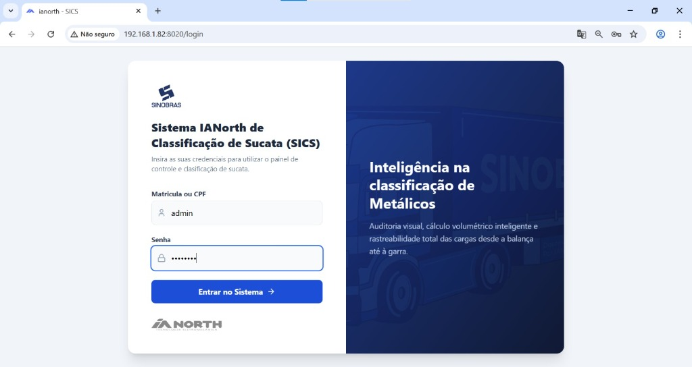
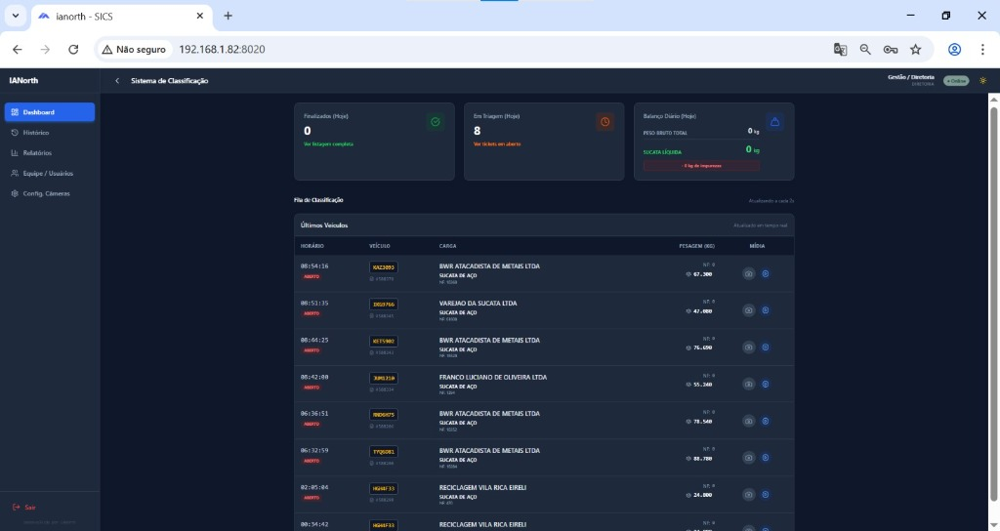
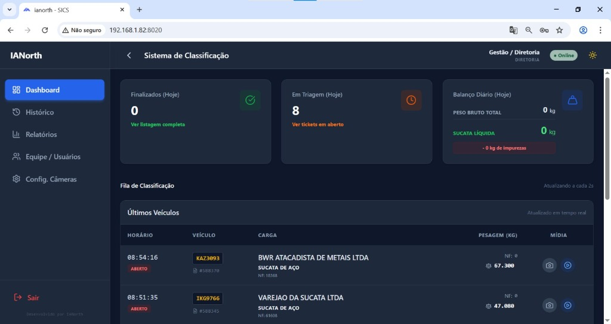
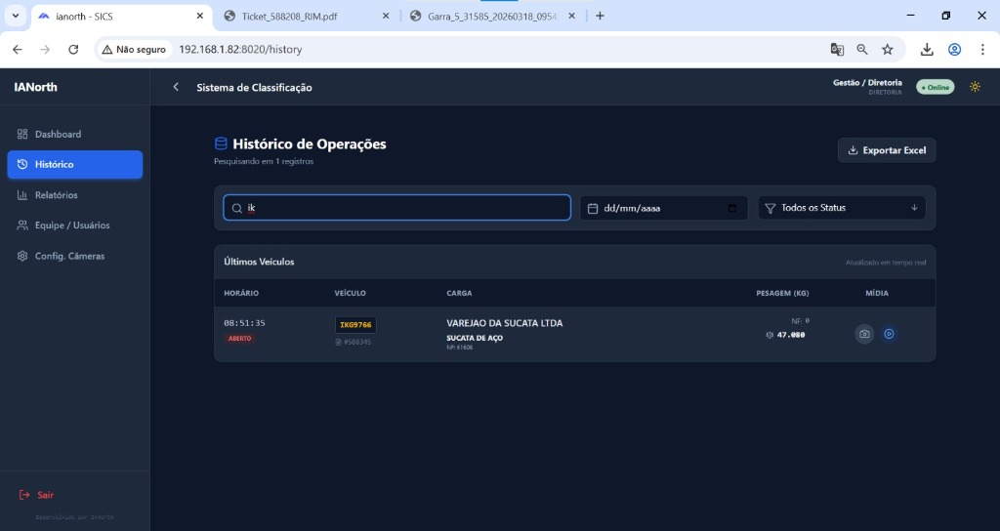
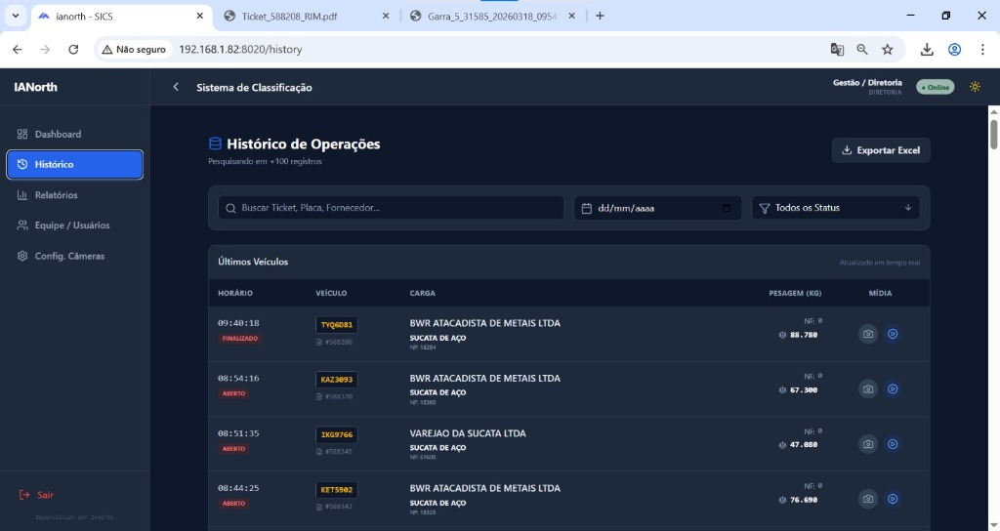

Sistema IANorth de Classificação de Sucatas
Guia completo para operadores e classificadores. Este documento cobre todo o fluxo de trabalho — desde a chegada do caminhão até a geração do Relatório de Impureza de Materiais (R.I.M.).
O Sistema IANorth integra câmeras de reconhecimento de placas (LPR) com uma plataforma web para automatizar e auditar o recebimento, medição e certificação de sucatas metálicas.
Ctrl+P no seu navegador.
Fluxo do Processo
Entenda cada etapa desde a chegada do veículo até a finalização do ticket.
| Fase | Responsável | Status do Ticket |
|---|---|---|
| Detecção da placa e consulta SINOBRAS | Sistema Automático | Aberto |
| Classificação e cubagem pelo operador | Classificador | Em andamento |
| Validação de densidade e impurezas | Classificador / Supervisor | Em andamento |
| Confirmação e geração do R.I.M. | Classificador | Finalizado |
Acesso ao Sistema
Acesse o sistema pelo navegador utilizando o endereço fornecido pela equipe de TI.

Navegue até o endereço da intranet fornecido pelo administrador. Ex.: http://192.168.1.82:8020
Digite as credenciais fornecidas pelo administrador do sistema. Não compartilhe sua senha.
Você será redirecionado automaticamente para o Dashboard principal.
Perfis de Acesso
| Perfil | Permissões |
|---|---|
| Admin | Acesso total: usuários, câmeras, todos os tickets e configurações |
| Classificador | Dashboard, classificação de tickets, histórico e geração de R.I.M. |
Dashboard
A tela inicial exibe o resumo do dia e os eventos em tempo real.

Abrindo um Ticket
O ticket é criado automaticamente quando a câmera LPR detecta o veículo. O operador acessa pelo Dashboard ou pelo Histórico.
Via Dashboard
O evento aparece com a placa do veículo, fornecedor, produto e peso bruto.
Você será redirecionado para a tela de detalhes do ticket com os dados pré-preenchidos.
Via Histórico
Utilize a barra lateral de navegação.
Use os campos de filtro no topo da listagem.
Tickets com status Aberto ainda aguardam classificação.
Informações exibidas no Ticket
| Campo | Origem | Descrição |
|---|---|---|
| Placa | Câmera LPR | Placa capturada automaticamente pela câmera |
| Nº da Nota | SINOBRAS | Número da nota fiscal ou romaneio |
| Fornecedor | SINOBRAS | Razão social do fornecedor |
| Produto | SINOBRAS | Tipo de sucata declarada |
| Peso Bruto | SINOBRAS | Peso na balança de entrada (kg) |
| Data/Hora | Sistema | Momento da detecção pela câmera |
| Foto | Câmera | Snapshot automático no momento da detecção |
Classificando a Carga
Esta é a etapa principal. O classificador informa os dados do material para que o sistema calcule peso líquido, tara, impureza e peso final.

1. Peso de Tara
Informe o peso vazio do veículo em quilogramas (kg). O sistema calcula automaticamente:
- Peso Líquido = Peso Bruto − Tara
2. Tipos de Material
Adicione um ou mais tipos de sucata presentes na carga. Para cada material informe:
| Campo | Descrição |
|---|---|
| Tipo de Sucata | Selecione na lista (ex.: Sucata Mista, Sucata Graúda, Gusa Sólido…) |
| Peso (kg) | Peso estimado do material nessa categoria |
| % Impureza | Percentual de impureza observado nesse material |
3. Validação de Densidade
O sistema valida a densidade da carga em tempo real com base nas dimensões do veículo (cubagem). Para cada material existe um intervalo de densidade aceitável:
| Material | Densidade Mínima (t/m³) | Densidade Máxima (t/m³) |
|---|---|---|
| Sucata Mista | 0,20 | 0,60 |
| Sucata Graúda | 0,30 | 0,80 |
| Sucata Média | 0,25 | 0,65 |
| Sucata Miúda | 0,40 | 0,90 |
| Pacotão / Fardo | 0,50 | 1,50 |
| Gusa Sólido | 2,70 | 3,90 |
| Aparas Aço | 0,40 | 1,20 |
| Ferro Fundido | 1,50 | 3,50 |
Indicadores de Densidade
Cubagem do Veículo
A cubagem (volume da caçamba) é necessária para o cálculo de densidade. O sistema memoriza as medidas de cargas anteriores do mesmo veículo.
Utilize trena ou medição visual. Informe em metros: Comprimento (C), Largura (L) e Altura (H) da carga.
O sistema calcula automaticamente: Volume = C × L × H (em m³).
Densidade = (Peso Líquido ÷ 1000) ÷ Volume. Deve estar dentro do intervalo do material.
Cálculo de Impurezas
As impurezas são deduções aplicadas ao peso líquido. Informe o percentual observado em campo para cada tipo de material.
Fórmulas
| Cálculo | Fórmula |
|---|---|
| Desconto (kg) | Peso Líquido × (% Impureza ÷ 100) |
| Peso Final (kg) | Peso Líquido − Desconto |
| Peso Final (t) | Peso Final ÷ 1000 |
Exemplos de Impurezas Comuns
- Terra, areia e pedras
- Madeira e plástico misturado
- Água acumulada
- Materiais não ferrosos (alumínio, cobre)
- Tinta em excesso
Registrar Fotos de Evidência
Use o celular ou câmera disponível. Fotos claras e bem iluminadas facilitam a auditoria.
Clique em "Adicionar foto" na seção de impurezas. As imagens serão anexadas automaticamente ao R.I.M.
Descreva o tipo e localização da impureza no campo "Observações".
Finalizando o Ticket
Após preencher todos os dados, revise e finalize o ticket para gerar o R.I.M.
Confirme: Peso Bruto, Tara, Peso Líquido, Desconto por impureza e Peso Final.
Materiais, cubagem, impurezas. A densidade deve estar dentro do intervalo esperado (ou devidamente justificada).
O status do ticket muda de Aberto para Finalizado.
Clique em "Gerar R.I.M." para baixar o PDF com todos os dados e fotos do ticket.
Histórico de Eventos
Consulte todos os tickets do sistema com filtros avançados.

Filtros Disponíveis
Exportar para Excel
Defina o período e os critérios de busca.
Um arquivo .xlsx será baixado com todos os registros filtrados, incluindo colunas de placa, fornecedor, produto, pesos, impurezas e data.
Relatório R.I.M. (Relatório de Impureza de Materiais)
O R.I.M. é o documento oficial que certifica a composição e impureza da carga recebida. É gerado em PDF.
O que consta no R.I.M.
- Logotipos da empresa e do fornecedor
- Número do ticket e data de emissão
- Dados do veículo (placa), fornecedor e produto
- Tabela de auditoria de pesagem: Bruto / Tara / Líquido / Desconto / Final
- Composição dos materiais por tipo e peso
- Percentual e descrição das impurezas
- Fotos de evidência das impurezas (máx. 2 por página)
- Campo para assinatura do classificador e do fornecedor
Gerando o R.I.M.
Tickets com status Finalizado estão prontos para emissão.
O sistema gera o PDF automaticamente no navegador e inicia o download.
O PDF pode ser impresso diretamente ou arquivado eletronicamente conforme a política da empresa.
Painel de BI (Business Intelligence)
Acesse indicadores e gráficos consolidados para análise gerencial.
Gerenciamento de Usuários Admin
Disponível apenas para administradores. Crie, ative, desative e redefina senhas de usuários.
Criar Novo Usuário
Preencha: nome completo, nome de usuário (login), senha inicial e perfil (Admin / Classificador).
Oriente o usuário a alterar a senha no primeiro acesso.
Outras Ações
| Ação | Descrição |
|---|---|
| Ativar / Desativar | Bloqueia o acesso sem excluir o histórico do usuário |
| Redefinir Senha | Define uma nova senha temporária para o usuário |
| Editar Perfil | Altera nome, login ou nível de acesso |
Configuração de Câmeras Admin
Configure os endereços IP e credenciais das câmeras Intelbras LPR.

Ex.: 192.168.1.100:80. Consulte o endereço com o técnico de TI.
Credenciais configuradas na câmera durante a instalação.
O sistema reconecta ao listener LPR automaticamente após salvar.
Glossário
| Termo | Definição |
|---|---|
| LPR | License Plate Recognition — reconhecimento automático de placas veiculares por câmera |
| SINOBRAS | Sistema integrado que fornece dados de balança e romaneio para cada caminhão |
| R.I.M. | Relatório de Impureza de Materiais — documento oficial de classificação da carga |
| Ticket | Registro de um evento de recebimento de sucata, da detecção até a finalização |
| Cubagem | Cálculo do volume da caçamba do veículo (Comprimento × Largura × Altura) |
| Densidade | Relação entre o peso líquido e o volume da carga (t/m³) |
| Peso Bruto | Peso total do veículo carregado, medido na balança de entrada |
| Tara | Peso do veículo vazio (sem carga) |
| Peso Líquido | Peso da sucata = Peso Bruto − Tara |
| Desconto | Dedução em kg correspondente ao percentual de impureza |
| Peso Final | Peso líquido após desconto das impurezas — base para faturamento |
| Sucata Mista | Mistura de materiais ferrosos sem classificação definida |
| Gusa Sólido | Ferro fundido em blocos sólidos, alta densidade |
| Fardo / Pacotão | Sucata prensada em formato compacto |
Sistema IANorth de Classificação de Sucatas — Documentação do Usuário — 2026
Para suporte técnico, contate a equipe de TI ou o administrador do sistema.